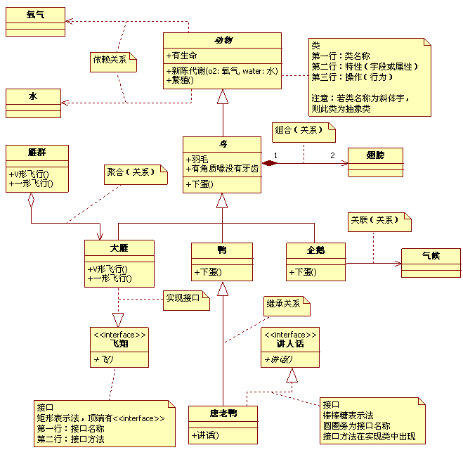
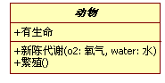
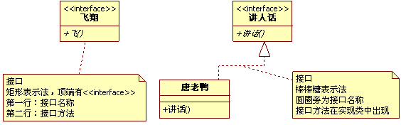
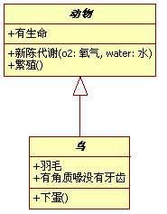
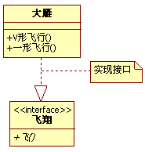
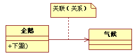
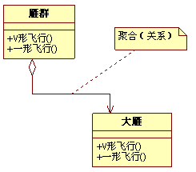
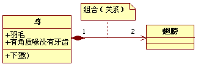
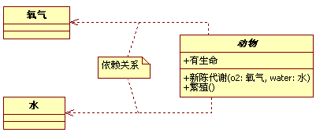

UML类图入门（来自《大话设计模式》）
举一个简单的例子，来看这样一副图，其中就包括了UML类图中的基本图示法。

首先，看动物矩形框，它代表一个类（Class）。类图分三层，第一层显示类的名称，如果是抽象类，则就用斜体显示。第二层是类的特性，通常就是字段和属性。第三层是类的操作，通常是方法或行为。前面的符号，+ 表示public，- 表示private，# 表示protected。

右下角的飞翔，它表示一个接口图，与类图的区别主要是顶端的<

接下来的是类与类，类与接口之间的关系了。首先注意动物、鸟、鸭、唐老鸭之间的关系符号。它们都是继承的关系，继承关系用空心三角形 + 实线来表示的。

上述所列举的几种鸟中，大雁最能飞，让它实现了飞翔接口。实现接口用空心三角形 + 虚线来表示。

企鹅和气候两个类，企鹅是很特别的鸟，会游不会飞。更重要的是，它与气候有很大的关联。我们不去讨论为什么北极没有企鹅，为什么它们要每年长途跋涉。总之，企鹅需要知道气候的变化，需要了解气候规律。当一个类知道另一个类时，可以用关联（association）。关联关系用实线箭头来表示。

再来看大雁和雁群这两个类，大雁是群居动物，每只大雁都是属于一个雁群，一个雁群可以有多只大雁。所以它们之间就满足聚合（Aggregation）关系。聚合表示一种弱的拥有关系，体现的是A对象可以包含B对象，但B对象不是A对象的一部分。聚合关系用空心的菱形 + 实线箭头来表示。

组合（Composition）是一种强的拥有关系，体现了严格的部分和整体的关系，部分和整体的生命周期一样。在这里鸟和其翅膀就是组合关系，因为它们是部分和整体的关系，并且翅膀和鸟的生命周期是相同的。组合关系用实习的菱形 + 实线箭头来表示。另外，你会注意到合成关系的连线两端还有一个数字1和数字2，这被称为基数。表明这一端的类可以有几个实例，很显然，一个鸟应该有两只翅膀。如果一个类可能有无数个实例，则就是n来表示。关系关系、聚合关系也可以有基数的。

动物的几大特征，比如有新陈代谢，能繁殖。而动物要有生命力，需要氧气、水以及食物等。也就是说，动物依赖于氧气和水。他们之间是依赖关系（Dependency），用虚线箭头来表示。

编程是一门技术，更是一门艺术，不能只满足于写完代码后运行结果正确就完整，时常要考虑如何让代码更加简练，更加容易维护，容易扩展和利用，只有这样才可以真正得到提高。写出优雅的代码真的是一种很爽的事情。UML类图也不是一学就会的，需要有一个慢慢熟练的过程。所谓学无止境，其实这才是理解面向对象的开始呢。